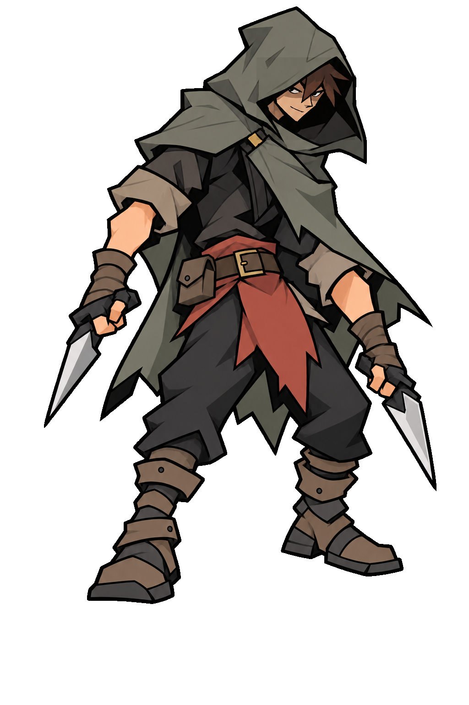
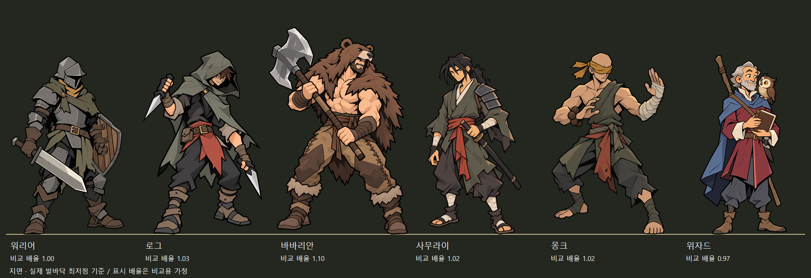
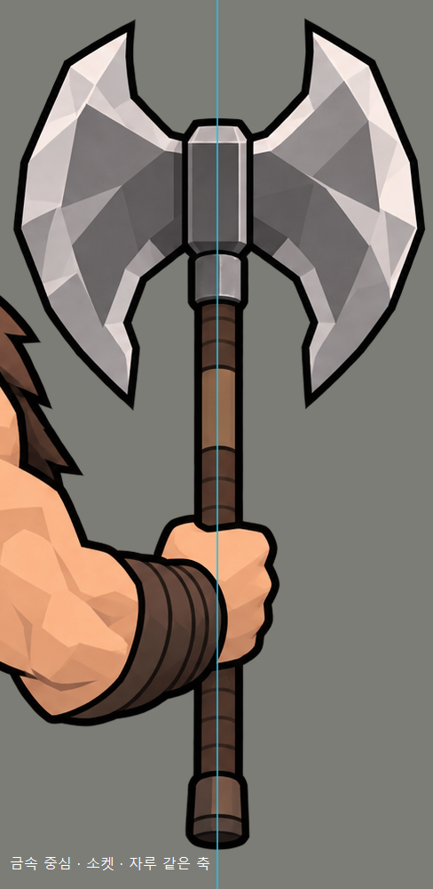
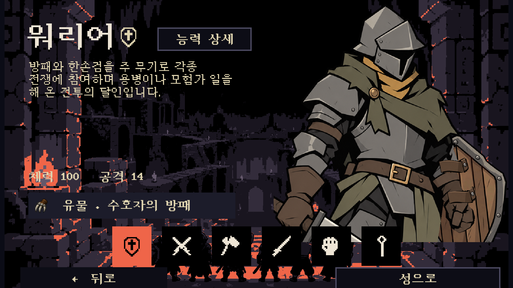
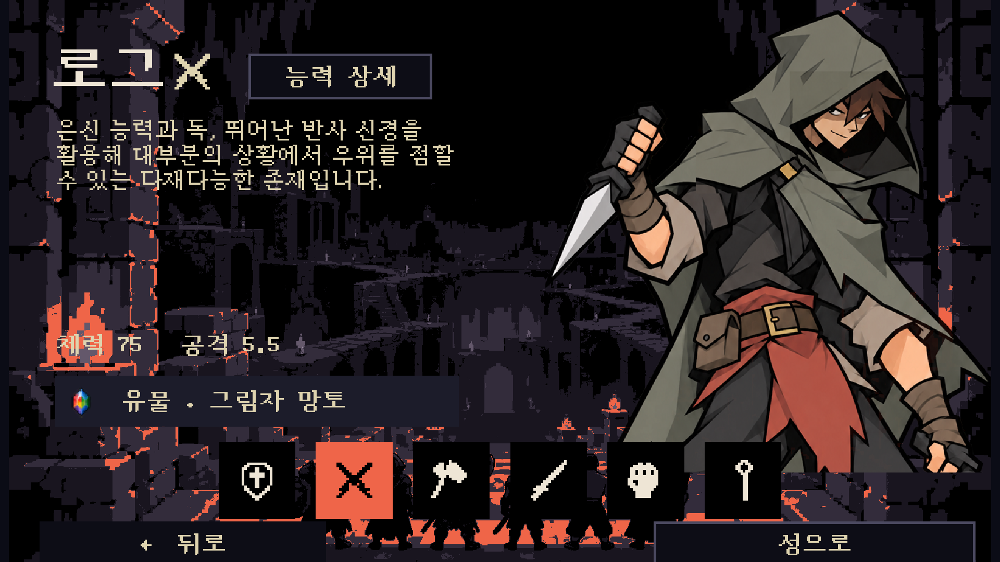
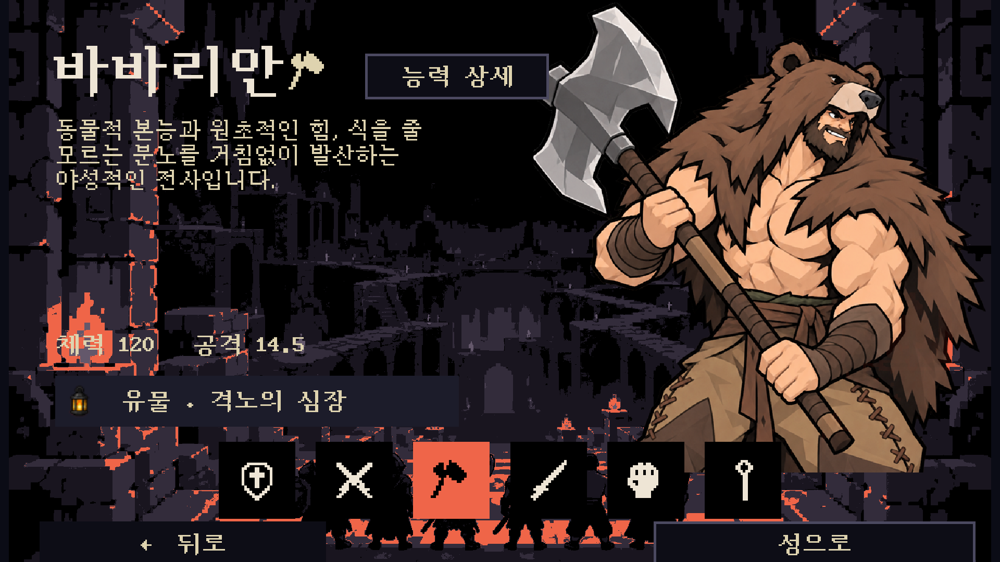
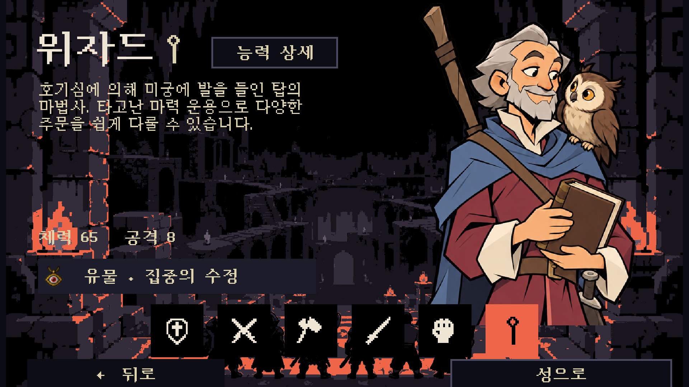
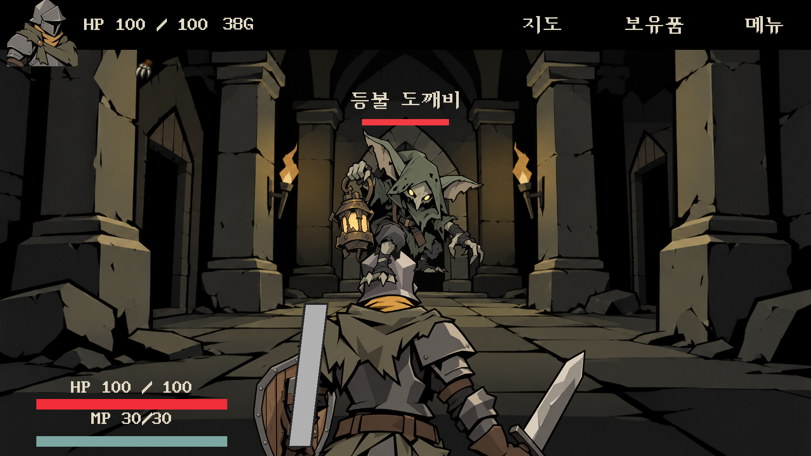
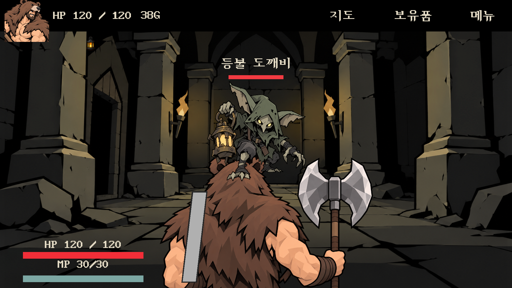
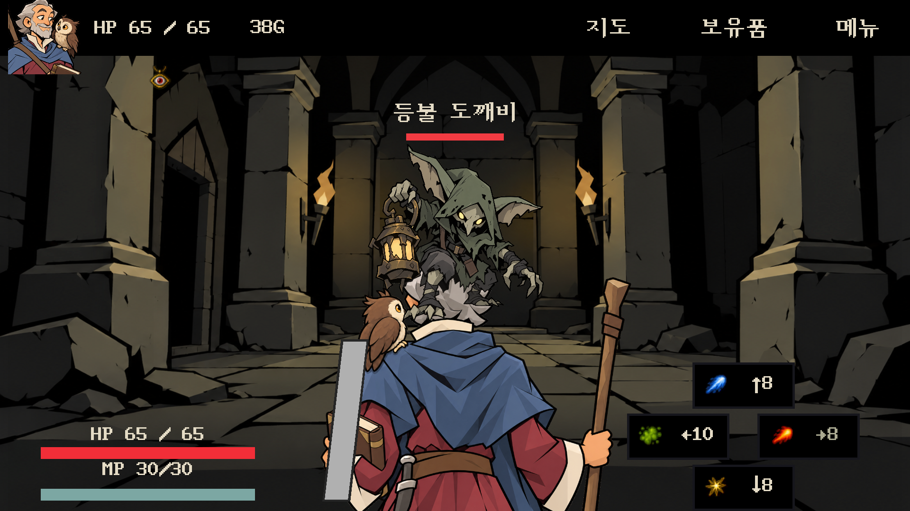

워리어 현재 게임 적용본 07만 보기 →
워리어 파일과 게임 참조 확인 완료. 바바리안 도끼 자세·위자드 앞모습의 원치 않은 변경·뒷면 책은 사용자 지적에 따라 재수정 대기 상태입니다.
원래 팔에 맞춘 방패 · 전투 뒷모습 · 파트너
워리어는 원래 팔·주먹의 좌표와 형태를 고정하고 방패만 재배치했습니다. 아래 원본 비교의 오른쪽이 현재 적용본입니다.
워리어 앞모습 · 원래 팔과 새 방패
 팔 자세 기준 원본
팔 자세 기준 원본 수정 · 팔은 그대로, 방패 안쪽 판과 띠를 팔에 맞춰 배치
수정 · 팔은 그대로, 방패 안쪽 판과 띠를 팔에 맞춰 배치워리어 뒷모습 · 원래 팔과 새 방패
 팔 자세 기준 원본
팔 자세 기준 원본 수정 · 원래 팔·주먹, 안쪽 나무판에 고정된 두 띠
수정 · 원래 팔·주먹, 안쪽 나무판에 고정된 두 띠팔을 다시 생성한 시안은 사용하지 않았습니다. 고정 띠가 덮는 부분 밖 팔 픽셀 변경 0
바바리안 · 승인된 앞모습과 상체 중심 뒷모습
 승인된 가죽 바지와 곰가죽 앞모습 · 원본 파일 그대로
승인된 가죽 바지와 곰가죽 앞모습 · 원본 파일 그대로 전투 뒷모습 · 허리 위 구도, 도끼 심·소켓·자루를 한 축으로 연결
전투 뒷모습 · 허리 위 구도, 도끼 심·소켓·자루를 한 축으로 연결로그 · 선택창에서도 보이는 역수 단검

이전 · 두 손이 내려간 자세 수정 · 가까운 손을 올린 역수 단검. 얼굴·앞머리·후드 원본 복원
수정 · 가까운 손을 올린 역수 단검. 얼굴·앞머리·후드 원본 복원원본 얼굴 픽셀 변경 0, 바바리안 승인 앞모습 파일 동일
위자드 · 부엉이와 눈맞춤, 손에 든 전투 스태프
 앞모습 · 닫힌 책을 두 손으로 지지하고 부엉이와 눈맞춤
앞모습 · 닫힌 책을 두 손으로 지지하고 부엉이와 눈맞춤 뒷모습 · 오른손 스태프, 왼팔에 안은 닫힌 책, 어깨 파트너
뒷모습 · 오른손 스태프, 왼팔에 안은 닫힌 책, 어깨 파트너현재 캐릭터들과 비교 · 지면 기준
원본 크기
실제 발 최저점을 같은 선에 맞췄습니다. 배율은 확정 신장 설정이 없는 상태의 비교용 가정입니다. 바바리안의 도끼와 위자드의 스태프를 몸 높이에서 제외했습니다. 비교 배율
실패 시안 재수정 및 도끼 축 검수
출력별 실패·수정·검수 기록

Unity 실제 선택창

워리어 · 원래 팔에 맞춘 방패
로그 · 역수 단검이 보이는 크롭
바바리안 · 승인된 앞모습
위자드 · 파트너와 눈맞춤Unity 실제 전투 화면

워리어
바바리안 · 상체 구도
위자드 · 스태프를 든 손저장 파일·검증 기록 · 내장 image_gen 최종 프롬프트 · 이전 기록